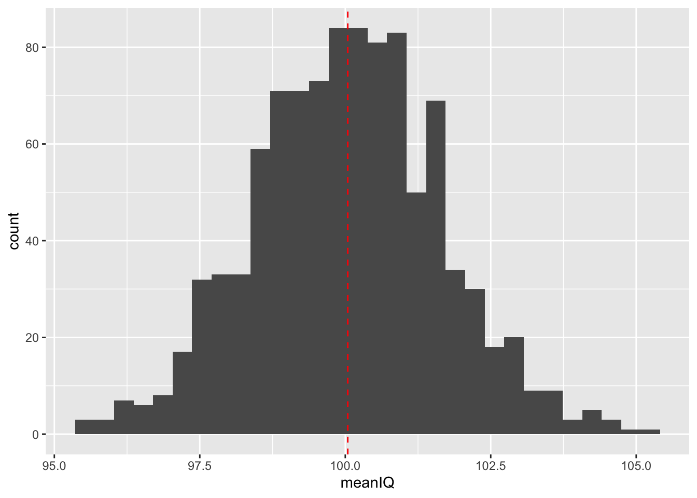

Chapter 5 Inferential Statistics
Samples, Standard Errors, and Confidence Intervals
Learning Outcomes:
- Understand what inferential statistics are and why they are used
- Learn how samples can be used to draw conclusions about the population
- Learn about and calculate standard errors and confidence intervals
Today’s Learning Tools:
Total number of activities: 8
Data:
- Synthetic data we make ourselves
Packages:
dplyrggplot2mosaic
Functions introduced (and packages to which they belong)
bind_rows(): Combine data frame(s) together row-wise (dplyr)geom_density(): Geometry layer for density plots (ggplot2)geom_errorbar(): Draw error bars by specifying maximum and minimum value (ggplot2)do(): Loop for resampling (mosaic)geom_vline(): Geometry layer for adding vertical lines (ggplot2)if_else(): Tests conditions for true or false, taking on values for each (dplyr)rnorm(): Create synthetic normally distributed data (base R)round(): Rounds to nearest whole number or specified number of decimals (base R)sample(): Randomly sample from a vector or data frame (mosaic)set.seed(): Random number generator start point (base R)
5.1 Generalising About the World from Data
Last week we revisited a familiar sort of statistics: descriptive. But we also learned how to conduct these measures using R. Today we learn the other main branch of statistics: inferential.
Whereas descriptive statistics is concerned with summarising and describing your data, inferential (or frequentist) statistics is concerned with using the data to say something about the world in which we live. Using samples drawn from our population of interest, we can conduct statistical analyses to generalise to our lives and what we observe around us.
Inferences made from inferential statistics are not bound to one dataset and sample, and that is the strength of this type of statistics. Because, however, we will be saying something that is applicable to the ‘real’ world, we must understand the theory for which makes this possible.
Today’s learning experience is the most theoretical of this course unit. To understand later inferential statistical analyses is to first understand the base on which they stand. Our three substantive topics today are: samples, standard errors, and confidence intervals.
5.1.1 Activity 1: Our preparation routine
As usual, we begin by opening your existing R project, then installing and loading the required packages as listed above under the ‘Packages’ subheader.
5.2 Today’s 3
As you continue the remainder of this course unit, you will observe how important it is to collect accurate information to conduct inferential statistics. Your findings are only as good as its basis, and if that basis is a shoddy collection of data, what you have to say will reflect that. An important way to collect accurate information is to ensure that what we have is representative of that real world. This is where samples arrive to play.
5.2.1 Samples
Say we are curious about how widespread robbery in the UK has been in the past 12 months. We could obtain police-recorded data to tell us this information. We also, however, know from previous criminology classes that many people do not report crimes to the police, so this data is limited, unable to tap into what is known as ‘the dark figure of crime’.
One way to address this is self-report victimisation surveyrs, such as the Crime Survey for England and Wales. While it might be ideal to survey everyone in the UK about whether they have been a victim of robbery in the past year and how many times they have been robbed, you might imagine, this is quite impractical. Surveying the entire population is not very practical because of time and financial constraints.
Sure, eventually mass collection of data from the population may be possible in the future as we have seen with social media corporations, but even then, access and availability remain issues. Because of these limitations of collecting information from the population, we use a sample.
A sample of the population is a small selection of that population of interest. You may recall from last semester and from your first year research methods courses about different approaches to sampling - that is different ways to select the people who you want to ask the questions to. In the case of such surveys, the aim is to choose the best sampling method to promote external validity.
If our sample has high external validity, then those included in it are a good representation of the population. To establish external validity depends on the way you collect your sample (e.g., random sampling versus convenience samples). This will make conclusions from a sample generalisable to the population. That is what the Crime Survey of England and Wales does: sample from the population to get an estimate of how widespread crime and victimisation are in the whole of the population.
So how good is a sample at representing the characteristics of an entire population? In the real world, most of the time it is impossible to get whole population data. So to illustrate and show you how we can trust our statistics from our samples to represent the parameters in the populations from which they are derived, we will create a fake population, from which we can draw samples.
We create synthetic data to represent a fake population to demonstrate how it is possible for a sample to be used to estimate what goes on in the whole population.
Last week we learned about distributions. Specifically, we focused on the normal distribution. This is also called a bell curve, because when we squint a little, the shape looks like a bell. Remember that normal distrbutions are symmetrical, (there is no skew!) and the mean is the same as the median. You can also look at measures of distribution, for example standard deviation, to realise how dispersed your data are. You can also know that about 68% of your data fall within +/- 1 standard deviation of your mean, and 95% of your data within +/- 2 standard deviations of your mean, and 99% of your data within +/- 3 standard deviations of your mean, when your variable is normally distributed. Neat!

Much of the work we will be carrying out in the coming weeks in terms of drawing inferences about the population based on a sample will make the assumption that our data are normally distributed. This is something that you will keep having to check, and come back to. In our case study today, we will be creating a fake population, who’s IQ scores follow a normal distribution. Let’s get to this now!
5.2.1.1 Activity 2: Making normally distributed synthetic data
The synthetic data will consist og randomly generated numbers to represent the intelligence quotient (IQ) scores of every probationer in the US, which is a population of about 3.6 million. For this example, we assume the mean IQ scores to be 100 and the standard deviation to be 15. We create this population distribution by using the function nrnorm() and assigning this to a vector object called prob_iq. Within the nrnorm() function, we specify the parameters n =, mean =, and sd =. That is the number of observations we want (3.6 million, one for each of the probationers in the US, remember this is the population), the mean IQ score we want the population to have (that is 100, specified above), and the dispertion around this mean, given by the standard deviation in the sd = parameter (specified abo e as 15 IQ points).
prob_iq <- rnorm(n = 3600000, mean = 100, sd = 15)Great, we now have a vector of numbers, all randomly created. Let’s get some descriptives:
mean(prob_iq) ## [1] 100.0005median(prob_iq) ## [1] 100.0082sd(prob_iq) ## [1] 14.99822You may notice a few things:
- 1: the mean is not exactly 100 and the sd not exactly 15. But they are very very close.
- 2: your answers may be slightly different to the lab notes. This is because r is randomly generating these numbers for you, every time you ask it to. So if you re-run the code above to re-create your `` object, you will get yet another set of numbers!
So what can we do? Well, we can set a specific seed from which the random numbers should grow. If we choose the same seed, then we will get the same set of random numbers. If we do this, we will all get the same results!
So, if want our results to be the same, so we set a seed using the function set.seed(), which ensures it generates the exact same distribution for this session. Then we re-create the prob_iq object:
set.seed(1612) # Use this number!
prob_iq <- rnorm(n = 3600000, mean = 100, sd = 15)Now again take the mean, the median, and the sd, and see that you are getting the same results as we are!
mean(prob_iq) ## [1] 100.0032median(prob_iq) ## [1] 100.0035sd(prob_iq) ## [1] 14.99679Great! Now we have these random IQ scores, let’s build a data frame using the function data.frame() in which we will create 2 columns. One for a unique identifier for each probationer. Let’s call this column probationer_id and another for IQ let’s call this one IQ. Name the whole dataframe prob_off:
prob_off <- data.frame(probationer_id = 1:3600000, # create a column and fill with all the numbers from 1 to 3.6 million
IQ = prob_iq ) # create a column and fill with our random IQ scoresNow we are nearly there with our fake population data, but for one last step. The values for IQ score must be whole numbers (integers). To achieve this, we will use the round() function. In the round() function you specify two things, first the object you wish to round (the numbers in the IQ column of our prob_off dataframe so prob_off$IQ) and the number of decimals you would like displayed (since we want whole numbers, we want 0 decimals!).
prob_off$IQ <- round(prob_off$IQ, 0)Now we finally have our complete fake population of 3.6 million US probationers and their IQ scores. You can have a look at this data with the View() function. Let’s also visualise this distribution will help us identify its shape. We use ggplot2:
# Have you loaded the 'ggplot2' library?
ggplot(prob_off) +
geom_histogram(mapping = aes(x = IQ), bins = 60) +
geom_vline(xintercept = mean(prob_off$IQ), col = "red", linetype = "dashed") # We add a red line in the code to show the mean of the population IQ
Visualising the distribution of IQ scores, we observe that the scores are normally distributed, which is bell-shaped, and there is no skewness on other side. The majority of probationers have an IQ around the mean of 100.
5.2.1.2 Activity 3: Taking a sample from (our synthetic) population
So above we created a dataset of all probationers in the US, all 3.6 million of them. This is our population. When we look at the mean, median, and standard deviation of this population, these numbers are the true estimates of IQ scores in the population of American probationers.
Now if we take a sample from this population, how accurate would our sample estimates be compared to the population estimates?
First, we make a sample that is taken from our population. We draw a random sample of 100 probationers using the function sample() from the mosaic package:
library(mosaic)In the sample() function, we specify two parameters. x = specifies what data set to sample from, and size = specifies the size of the sample to take. So in this case, to randomly select 100 probationers from the prob_off dataframe we use:
# We take a sample of 100 from our data frame, ‘prob_off’, and put it into an object called ‘sample1’
sample1 <- sample(x = prob_off, size = 100)Now that we have our sample sample1, we can take some descriptive statistics of ‘sample1’
mean(sample1$IQ) # 101.59 ## [1] 101.59median(sample1$IQ) # 101.5 ## [1] 101.5sd(sample1$IQ) # 16.27485## [1] 16.27485The results seem very close to the ‘true’ estimates from our population of probationers. The reason, though, is we have all set the same seed. But if we did not, we would get different estimates each time we took a random sample from the population.
Getting different estimates each time we randomly sample from the population is a real problem facing researchers: each time you take a sample from your population of interest, its estimates may not be similar to the true but unknown estimates of that population. This variation in estimates is known as sampling variability, an unavoidable consequence of randomly sampling observations from the population.
Sampling variability makes up what is known as the sampling distribution. This distribution comprises the means of the many samples we draw from the same population. These two concepts are crucial to demonstrating how samples can be used to make inferences about the population. Here’s why:
When we resample – take repeated samples from the same population of interest – we create many sample means. The interesting bit is that when you take the overall mean of a large number of sample means, it is very close to that true population mean of 100.
5.2.1.3 Activity 4: The sampling distribution
We use the do () and group_by () functions to demonstrate:
# We use the do () function to make 1,000 automatic resamples from the data frame ‘prob_off’
# Each resample comprises 100 cases
# We put our 1,000 resamples into an object called ‘sample100’
sample100 <- do(1000) * sample(x = prob_off, size = 100)
# Additional variables are now found in sample100, which helps us to calculate the mean IQ of each sample, for which there are now 1000 of them
# Now select the sample100 data frame
sample_means100 <- sample100 %>%
group_by(.index) %>% # Group by .index (the sample id)
summarize(meanIQ = mean(IQ)) # Creating new variable of mean IQ
mean(sample_means100$meanIQ)## [1] 100.1112# We can visualise this sampling distribution to compare to the previous population distribution
ggplot(data = sample_means100) +
geom_histogram(mapping = aes(x = meanIQ)) +
geom_vline(mapping = aes(xintercept = mean(meanIQ)), col = "red", linetype = "dashed")## `stat_bin()` using `bins = 30`. Pick better value with `binwidth`.
The histogram of our sampling distribution shows this very important concept in inferential statistics: if you randomly draw repeated samples from the same population and calculate the mean of each sample, then plot the frequency of those means, you will get the normal distribution – that bell-shaped curve. This indicates that most samples drawn from the population will have a mean close to the true population mean.
According to our sampling distribution of probationer IQ scores, drawing a sample with a mean IQ score that is radically different from that of the population would be unlikely. This concept also applies to other point estimates such as the median and standard deviation, and not just the mean. Of course this also depends on sample size.
5.2.1.4 Activity 5: Sample sizes
What if we had repeated samples of 30 instead of 1,000? We use the function bind_rows () to combine these different data frames of different sample sizes to answer our question:
# 1000 probationers in each sample
sample1000 <- do(1000) * sample(x = prob_off, size = 1000)
# 30 probationers in each sample
sample30 <- do(1000) * sample(x = prob_off, size = 30)
# Calculate the means IQ scores for each sample
sample_means1000 <- sample1000 %>%
group_by(.index) %>%
summarize(meanIQ = mean(IQ))
sample_means300 <- sample30 %>%
group_by(.index) %>%
summarize(meanIQ = mean(IQ))
# Bind them with our first example, which had 100 probationers in each sample
sample.means.total <- bind_rows(sample_means300, sample_means100, sample_means1000, .id = "sample.size")
# Density plot for comparison
ggplot(data = sample.means.total) +
geom_density(mapping = aes(x = meanIQ, fill = sample.size), alpha = 0.5) +
scale_fill_discrete(labels = c("30","100","1000"))From the density plot, all three sample distributions are normally distributed and have similar means to that of the population. Notice, however, that the larger the sample size, the more likely that the sample means are closer to those of the population. The distribution of sample sizes of 1,000, for example, is pointy, indicating that the IQ scores cluster very closely to the true population mean, whereas the distribution of the sample sizes of 30 is flatter, and its scores are more spread away from the true population mean. The implication is that if we draw small sized samples, we have a higher chance of having a sample that does not reflect the true population at all. Therefore, our findings and generalisations will be inaccurate.
5.2.2 Standard Errors
5.2.2.1 Activity 6: The central limit theorem
We can summarise the variability of the sampling distribution in an estimate called standard error (SE). It is essentially the standard deviation of the sampling distribution. We demonstrate how sample size affects the SE, in that the larger the sample size, the smaller the SE and vice versa:
sd(sample_means300$meanIQ)## [1] 2.695511sd(sample_means100$meanIQ)## [1] 1.485388sd(sample_means1000$meanIQ)## [1] 0.4774102What we have learned is succinctly referred to as the Central Limit Theorem. This theorem states that as sample sizes get larger, the means of the sampling distribution approaches normal distribution; it is able to reflect the true population estimate.
With the synthetic data, we have demonstrated how samples can estimate the population, which is usually unknown to us. The SE is helpful for when we want to know the extent to which the mean of the sample we have, drawn from a population whose estimates are unknown to us, is an accurate estimation of the true mean in that population. We calculate the SE in R by dividing the standard deviation of our IQ variable by the square root of our sample size:
# Select our data frame with all 1000 samples
sample1000 %>%
filter(.index == 1) %>% # Filter the first one (choose any)
summarize(SE = sd(IQ)/sqrt(1000)) # Calculate the error## SE
## 1 0.4783743The SE is 0.4783, which indicates that the mean of our sample of 1,000 American probationers is .50 away from the true population mean of said probationers – very close.
5.2.3 Confidence Intervals
A better way of communicating the extent of inaccuracy in sample estimates is to use confidence intervals (CIs). These appear as an interval that tells you the margin of error – how many percentage points is your sample estimate away from the population estimate. We calculate them by, first, returning to our normal distribution.
A characteristic of the normal distribution is that 95% of values will fall within 1.96 standard deviations of the mean. This is derived from the 68-95-99.7 rule, or known as an empirical rule, which states that 68% of cases in the distribution will fall within one standard deviation above and below the mean; 95% within two SD; and 99.7% within three SD.
5.2.3.1 Activity 7: The 68-95-97 rule in action
Two observations to note: first, last week we learned about standard deviations and that there was mention of 68% of verbal assaults falling within one SD; it was a reference to this rule. Second, there is a contradiction with the numbers. If 95% of values fall within 1.96 SD, then why does the empirical rule state that 95% of values will fall within 2 SD? The former (1.96) is the precise number and the latter (2) is an approximation, meant to help you memorise this rule easier than if the value was a non-integer like 1.96.
If 95% of values of the normal distribution fall within 1.96 SD of the mean, we are able to calculate the upper and lower boundaries of this particular confidence interval:
# One-off sample containing 1000 probationers
sample1 <- sample(x = prob_off, size = 1000)
# Constructing the confidence interval using what we know about SDs and normal distributions
sample1 %>%
summarize(lower = mean(IQ)-1.96*sd(IQ), meaniq = mean(IQ), upper =
mean(IQ)+1.96*sd(IQ))## lower meaniq upper
## 1 69.72398 100.539 131.354Your numbers may differ a bit as we have not set a seed, but should be about 69.724 for the lower boundary ; 131.354 for the upper boundary; and 100.539 for the mean. We add these using the geom_vline function to a density plot visual to better understand our obtained interval:
ggplot(data = sample1) +
geom_density(mapping = aes(x = IQ)) +
geom_vline(mapping = aes(xintercept = mean(IQ)), col = "red", linetype = "dashed") +
geom_vline(mapping = aes(xintercept = mean(IQ) +
1.96*sd(IQ)), col = "blue", linetype = "dashed") +
geom_vline(mapping = aes(xintercept = mean(IQ) - 1.96*sd(IQ)), col = "blue", linetype = "dashed")
Seeing the dashes that represent the confidence interval shows us that IQ scores will vary away from the mean of our sample, but 95% of them will fall within this interval. Similar to what we learned about repeated samples, if we took 100 resamples of our population of probationers and obtained the sample means, the true population mean will fall within the confidence interval 95% of the time. Thus, only 5% of the time will our resamples fail to obtain the true population mean. We use R to illustrate this concept and introduce a new function if_else() to do so:
# Create a vector containing the true population mean from prob_off
true.mean <- mean(prob_off$IQ)
# Select the sample of 1,000 samples, each with 100 probationers and place in object, ‘new.sample.ci100’
new.sample.ci100 <- sample_means100 %>%
slice(1:100) %>% #Take the first 100 means
mutate(lower = meanIQ-1.96*sd(meanIQ), upper = meanIQ+1.96*sd(meanIQ), # Compute lower and upper boundaries to create a new variable called ‘capture.mean’
capture.mean = if_else(condition = lower > true.mean | upper < true.mean, true = "no", false = "yes")) # Specify code below to be: If lower > true mean or upper < true mean then capture.mean will #be "yes"
# If not, capture.mean will be "no"
# Produce table to show new variable and how many Cis captured population mean
table(new.sample.ci100$capture.mean)##
## no yes
## 4 96Your result may slightly differ but, in this example, 96% of CIs obtained the true population mean and 4% did not, which is close to what we expected.
5.2.3.2 Activity 8: Visualising confidence intervals
We can visualise this to better understand what we have just found:
ggplot(data = new.sample.ci100) +
geom_vline(mapping = aes(xintercept = true.mean), linetype = "dashed") +
geom_errorbarh(mapping = aes(xmin = lower, xmax = upper, y = .index, colour = capture.mean)) + # Creating error bars to represent CIs and colouring in which ones captured population mean #and did not by ‘capture.mean’
geom_point(mapping = aes(y = .index, x = meanIQ, colour = capture.mean))
The visual shows the result obtained in the table, but here, you can see all 100 of the scores, their CIs, and how 95% of the time, they capture the true population mean. In reality, we have no way of knowing whether we have captured the true population estimates in our sample, but the use of the confidence interval gives us confidence that we are on the right track, so reporting CIs in your results is good practice for presenting your findings.
5.3 SUMMARY
Today was a theoretical demonstration of why samples can be used to estimate what is happening in the population. Samples with high external validity can do so. This is the foundation of inferential statistics, the use of samples to draw conclusions about the population. We used synthetic data to show why. Despite sampling variability, the means of the sampling distribution demonstrate that it is able to approximate the normal distribution and, therefore, the true population estimates. This is further demonstrated by the central limit theorem, which clarifies that sample size matters in producing more accurate estimates of the population. We learned about the standard error and then onto confidence intervals, which is useful in establishing how accurate our estimates are, because in reality, rarely are the population estimates known.
Homework time!